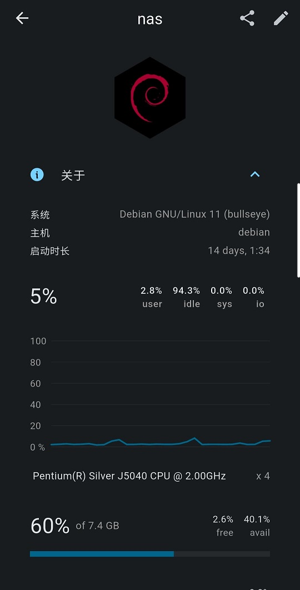

如果你喜欢敲命令来操作 Docker，那么这点你可以跳过了，否则可以安装 portainer 对 Docker 进行页面管理。
Version：portainer-ce 社区版 2.19.5
# 介绍
portainer 管理面板是一个简洁的 dockers 容器可视化操作界面，它把常规的命令操作搬到了显示面板上，提供状态显示面板、应用模板快速部署、容器镜像网络数据卷的基本操作（包括上传下载镜像，创建容器等操作）、事件日志显示、容器控制台操作、Swarm 集群和服务等集中管理和操作、登录用户管理和控制等功能。
具体介绍可以参看官网：Kubernetes and Docker Container Management Software
# 安装
运行 Docker：
# 拉取汉化版镜像 | ||
docker pull 6053537/portainer-ce:latest | ||
# 启动容器 | ||
docker run -d \ | ||
--name portainer \ | ||
-p 9000:9000 \ | ||
-v /var/run/docker.sock:/var/run/docker.sock \ | ||
-v /app/portainer_data:/data \ | ||
-e TZ=Asia/Shanghai \ | ||
--privileged=true \ | ||
--restart always \ | ||
6053537/portainer-ce |
参数解释：
-d：以后台模式运行容器。--name portainer：设置容器的名称为portainer。-p 9000:9000：将容器的 9000 端口映射到主机的 9000 端口，使得 portainer 的 Web 界面可以通过主机的端口访问。-v /var/run/docker.sock:/var/run/docker.sock和-v /app/portainer_data:/data：将主机/var/run/目录下的docker.sock和/app/portainer_data目录下的portainer_data分别映射进容器的/var/run/docker.sock和/data路径。--restart always：确保容器在退出时自动重启。6053537/portainer-ce：指定使用的 Docker 镜像。
note：在 docker run 执行后面加入 --restart=always 可以使开机后会自动启动面板，否则还要自己手动设备启动。
最后通过访问 http://localhost:9000 来访问 portainer 的 Web 界面。
# 使用
初次访问 portainer 的 Web 界面，会提示你建立一个 admin 的管理账号：
并根据向导初始创建环境，这里选择本地环境：
完成后你就可以管理你的所有 Docker 容器了：
# 安可
关于 App 客户端，可以使用 ServerBox 服务器工具箱：
- 状态图表（CPU、传感器、GPU 等）, SSH 终端，SFTP, Docker & 进程 & Systemd 管理，S.M.A.R.T ...
- 特殊支持：生物认证、推送、桌面小部件、watchOS App、跟随系统颜色 ...
图示：
